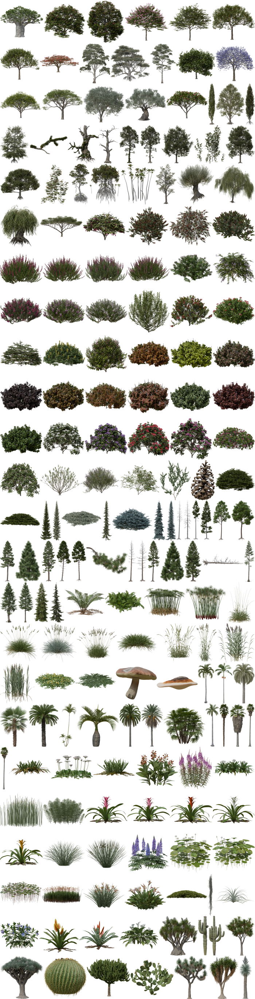
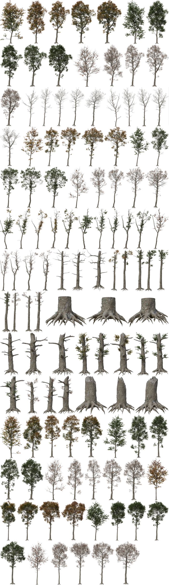

PF2B (PlantFactory to Blender) is an addon that enables the direct import of plants created in PlantFactory by e-on software into Blender. PF2B automates the setup process, allowing you to transfer detailed vegetation assets to Blender with minimal manual configuration.
Who is this for?
- 3D artists looking to add high-quality, procedurally generated plants to their Blender scenes.
- Environment designers who need a quick and efficient way to populate landscapes with rich vegetation.
- Archviz professionals who want realistic vegetation to enhance exterior renders.
Why use PF2B?
- Procedural variety – Access over 200 plant species and more than 10,000 unique presets with infinite procedural variations.
- Optimized for performance – Choose between low-poly and high-poly plant versions based on your project's needs.
- Instant setup – No need to manually assign materials or textures.
- No additional cost for PlantFactory – PlantFactory is now freely available as a perpetual version, so you can generate and use plants freely.
Bring the power of PlantFactory to Blender with PF2B and take your vegetation workflow to the next level! 🌿
One-click to Import
Queue import
Or take advantage of the queue system to efficiently import your plants in batches!
Note: The import processes shown in the videos have been sped up for demonstration purposes. Actual speed vary depending on your computer's processing power.
Plant Browser
Custom-built Plant Browser, allowing you to effortlessly navigate through the 20,000+ plant presets. The browser includes robust search and filtering functions to help you quickly preview different species and variations, simplifying the process of finding the perfect vegetation for your scene.
Adjust
Effortlessly Adjust Your Plants to Fit Any Scene!
Go Further: Edit Your Plants Directly in PlantFactory
If you want to take customization to the next level, you can always edit your plants directly inside PlantFactory to harness the full power of procedural generation. Modify parameters, adjust growth patterns, tweak materials, or even create entirely new variations, giving you complete control over your vegetation. Whether you need highly detailed hero assets or optimized low-poly versions for large environments, PlantFactory offers the flexibility to refine your plants exactly as you need.
Plants & Presets
With all the free libraries installed, the PlantCatalog library includes 194 unique plant species across 11 categories, offering a total of 10,377 presets. When factoring in multiple detail levels, this expands to 450 plants and 23,193 presets, providing you with an incredible range of options for your projects!
Additionally, the regular PlantFactory library features 41 plant species with 22 unique presets, primarily in Low Poly detail level.
A selection of available plant species:

Each plant species comes with numerous presets, allowing for customization and versatility. Below is an example showcasing all 115 presets for the 'Quercus robur forest HD' plant:

⚠️ Notes Before Purchasing ⚠️
Requirements
- Blender 4.2 or newer
- PlantFactory 2024
- Operating System: Windows
Before purchasing, please ensure you fully understand what this addon does and its requirements. This addon relies on third-party software called PlantFactory (approximately 1.6 GB) to function. While PlantFactory is free, setting it up requires some additional steps, which are clearly outlined in 'Getting Started' guide. For full functionality, it is also recommended to install the PlantCatalog library (approximately 20 GB), which significantly enhances the range of plants available for use but may take some time to download and install.
PF2B does not guarantee 100% compatibility with all plants. With over 23,000 presets, it is not possible to manually test and verify each one. However, compatibility is very high, and approximately 99% of plants should import correctly without manual intervention.
If you encounter issues, such as incorrect texture settings or geometry problems, please reach out. I will do my best to resolve them by adding plant-specific configurations to the addon.
For more details, see the PF2B: Under the Hood page.
Documentation
Extensive documentation is available here. If you have any questions about how this all works or how to set things up, please refer to the 'Getting Started' section in the documentation. You'll also find detailed information about all the available settings and troubleshooting guides.
Other Add-ons by Me
BatchGenie
An add-on designed to simplify and automate common asset-related tasks in Blender.
PF2B is a third-party addon and is not an official product of Bentley Systems, E-on Software, or PlantFactory. It is not affiliated with or endorsed by these companies.